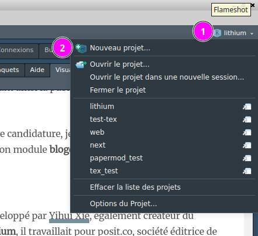
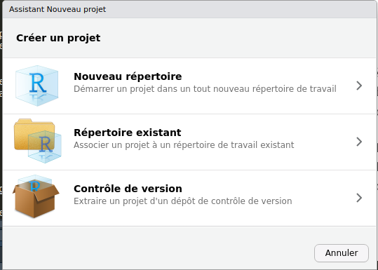
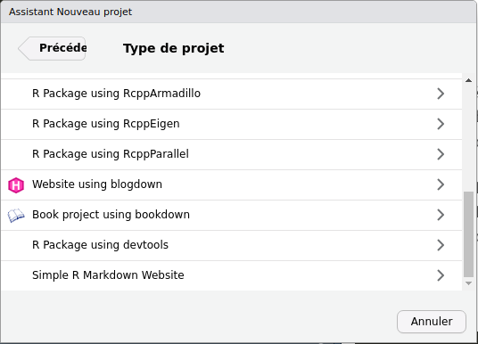
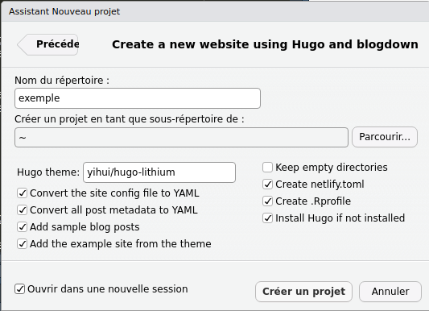
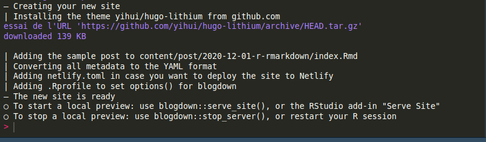
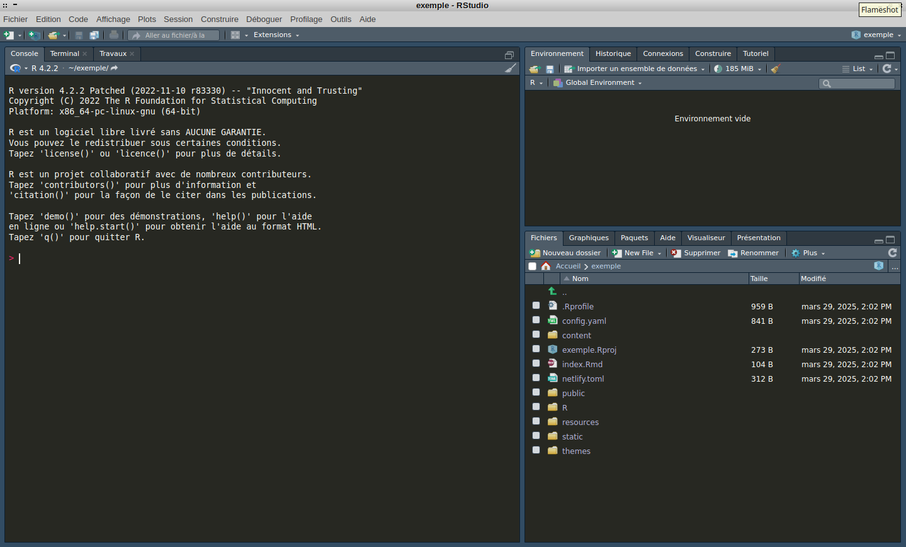
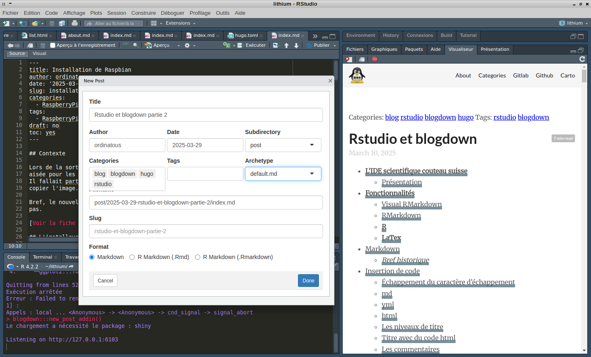

Dans le précédent article , j’avais fait un peu le tour de rstudio, beaucoup parlé du markdown mais pas du module que j’utilise , à savoir blogdown.
Contexte
Spoiler alert !! Digression en vue !!
Comme de nombreux geek, j’ai acheté un nom de domaine dans l’idée de partager un peu de connaissance. Et je me suis retrouvé avec un site wordpress sur les bras.
J’ai vite constaté que ça ne me convenait pas, je ne voulait pas consacrer de temps à son apprentissage. Je n’avais pas la prétention de gérer des utilisateurs, ou de publier des newsletter, et encore moins faire de la modération contre des bots.
Archive du blog informatique 15 Mar 2018 - 22 Feb 2020
Durant ma formation à Lyon en 2014/2015, on m’a fait découvrir spip, bof, bof, pas convaincu non plus.
J’ai vite “développé” un simple site en html css, juste pour comprendre comment ça fonctionnait. Un peu de javascript pour faire un joli. Archive du site CV-en-ligne 24 Feb 2015 - 4 Nov 2016
C’était mon CV et lettre de motivations en mode web.
Le web design n’est pas le sujet qui me passionne le plus, mais cela m’a amené à découvrir d’autres choses, comme les fondamentaux du document texte, mais aussi à débugger une application web.
Définitivement le web design, ce n’est pas pour moi, et wordpress encore moins.
Mes tests
ZIM
J’ai testé ZIM aussi , je l’utilisais comme wiki de bureau puis en creusant un peu, j’ai vu qu’on pouvait en faire une version web. J’avais bricolé un peu le template, sans tout casser; j’étais content.
Mais je devais réécrire les chemins dans les pages html, alors j’ai utilisé sed, au début ça ce passait bien, puis je me souviens avoir fait une boulette, j’ai tout pété mon site.
J’étais dépité, souvenez vous: le mieux est l’ennemi du bien. Quand vous avez un truc qui va bien arrêtez vous avant de vouloir faire mieux.
Ensuite, ça a été un fiasco, vu que je bricolais plein de truc en même temps, j’ai foutu le bordel dans les versions de python, et c’est zim qui ne fonctionnait plus.
Moral dans les chaussettes, je n’avais vraiment pas de temps à consacrer à ça, j’étais alors en formation à Marseille avec bien assez de travail sur les bras.
J’ai republié l’ancienne version du site il me semble.
Jekyll et les github-pages
Je me suis ensuite tourné vers github, les github-pages, et jekyll, en quelques mots:
jekyll est un moteur de blog statique, vous rédigez votre article en markdown, vous lancez le processus, et lui ce charge de convertir votre markdown en html, réécrit les liens, met les pages et les images au bon endroit, et c’est tout.
Ce type de site, utilise des thèmes que l’on peut modifier, ou changer assez facilement. Quand on y comprends quelques choses au CSS, ce n’est pas très difficile non plus, mais il faut s’y intéresser un peu.
Mais considérant que c’était tricher que de publier sur la plateforme, j’ai trouvé le moyen de continuer à me compliquer la vie, en persistant à publier sur mon hébergement, rendant ainsi la publication d’articles laborieux et pas plaisant du tout.
Et par dessus tout, je ne me sentais pas la légitimité de publier sur la plateforme, je ne suis pas dev, je ne présente pas un projet qui va changer la vie des gens, je sentais la démarche un peu trop opportuniste.
Le R, RStudio et blogdown
Puis au détour d’une candidature, je découvre le R, RStudio et miraculeusement son module blogdown.
Je me suis beaucoup amusé avec le R, mais je persistais toujours à me compliquer la vie en publiant sur mon hébergement via le FTP, alors qu’en réalité les outils étaient là disponible.
Avec le recul, je me dis que j’étais idiot de persister dans une méthode aussi contraignante.
Archive du site avec l’ancien workflow
Blogdown
Blogdown a été développé par Yihui Xie, également créateur du template hugo-lithium, il travaillait pour posit.co, société éditrice de RStudio. Et a annoncé son départ tout récemment.
Ce module s’installe très facilement dans l’éditeur, il vous faut simplement installer go auparavant.
go étant un langage de programmation développé par google, voir article wikipédia. Source
Dans la console R, il suffit d’entrer:
install.packages("blogdown")
Ce module permet d’exploiter Hugo, qui est un moteur de blog statique.
Tout comme jekyll, il va convertir les documents markdown en html, tout mettre à la bonne place, réécrire les liens. En réalité , il passe les documents textuels à pandoc qui fait la conversion.
Créer un projet
En haut à droite , il y a un sélecteur de projet, et puisque je suis en train d’éditer l’article, je suis dans le projet lithium .Oui, je fais preuve de beaucoup d’imagination.

Nouveau Répertoire
L’assistant s’ouvre , et sélectionnez Nouveau répertoire.

Type de projet
On choisi Website using blogdown. Mais RStudio peut faire beaucoup plus de choses.

Nommage
Débordant d’imagination, je le nomme exemple. Je laisse tout par défaut, et demande à ouvrir une nouvelle session.

On voit dans la console que tout est clairement indiqué. Chose que je n’avais pas lu, la première fois …

Nouveau site exemple
Je suis dans la nouvelle session, et on voit que le répertoire du site exemple est peuplé.

Architechture d’un site hugo
Par défaut, voici le contenu d’un site hugo. Le mien est un peu différent, ça fait un peu plus 2 ans que je l’ai fait, et je l’ai personnalisé récemment, en prenant le temps de bien lire la documentation.
Lorsque vous créez un article, blogdown va le placer automatiquement dans content, qui lui même, une série de sous répertoire classé par date, lorsque vous lancez la construction du site, le processus hugo démarre, modifiant les fichiers selon votre configuration, puis les place dans le répertoire public.
ordinatous@gallyair:~/exemple$ tree -L 1
.
├── config.yaml
├── content
├── exemple.Rproj
├── index.Rmd
├── netlify.toml
├── public
├── R
├── resources
├── static
└── themes
Voici le mien:
Il me semble que j’avais cloné un projet pour le nettoyer et me l’approprier, dans l’ensemble ils sont relativement semblable.
ordinatous@gallyair:~/lithium$ tree -L 1
.
├── content
├── hugo.toml
├── index.Rmd
├── layouts
├── lithium.Rproj
├── netlify.toml
├── public
├── resources
└── themes
-
hugo.toml / config.yaml
Ces 2 fichiers ont la même fonction, c’est la configuration du site, elle est découpée en bloc.
Relativement simple à comprendre, je vais commenter la configuration directement dans le fichier.
# baseurl correspond à l'adresse du site
# c'est cette adresse qui va être écrit dans les fichiers html
baseurl = "https://ordinatous.github.io/blogdown/"
# languageCode c'est simplement la langue du site,
# mais on peut en mettre plusieus.
languageCode = "fr-FR"
# title c'est le titre qui apparait dans l'onglet du navigateur
title = "Les ordinateurs, les autres et moi"
# theme c'est le thème du site, il est placé dans le répertoire theme
# de l'arborescence du site. Celui-ci est justement un thème que j'ai
# forké, et modifié sans tout casser.
theme = "hugo-lithium-toc"
# Je ne l'utilise pas googleAnalytics.
googleAnalytics = ""
# ignoreFiles sont les fichiers a ne pas déplacer dans public.
ignoreFiles = [ "\\.Rmarkdown$", "\\.Rmd$", "_cache$", "\\.knit\\.md$", "\\.utf8\\.md$" ]
[permalinks]
# C'est la définition du nommage des articles, slug est le nom du
# fichier, basé sur le titre de larticle sans les espaces.
post = "/:year/:month/:day/:slug/"
# Les 2 blocs suivant, je n'ai pas encore bien réussi à les configurer.
[pagination]
disableAliases = false
pagerSize = 10
path = 'page'
[taxonomies]
tag = "tags"
category = "categories"
# menu.main c'est la définition de la barre de navigation
# name pour le nom d'affichage
# url le chemin du répertoire
# weight pour l'ordre d'affichage
[[menu.main]]
name = "About"
url = "/about/"
weight = 2
[[menu.main]]
name = "Categories"
url = "/categories/"
weight = 3
[[menu.main]]
name = "Carto"
url = "https://carto.ordinatous.com"
weight = 6
[[menu.main]]
name = "Github"
url = "https://github.com/ordinatous"
weight = 5
[[menu.main]]
name = "Gitlab"
url = "https://gitlab.ordinatous.com/explore"
weight = 4
# params pour les paramètres, à part la description, je n'y ai pas
# touché, ce sont les paramètre de coloration syntaxique.
[params]
MathJaxCDN = "//cdnjs.cloudflare.com/ajax/libs"
MathJaxVersion = "2.7.5"
description = "Un site édité avec Hugo and blogdown à l'aide de Rstudio."
favicon = "favicon.ico"
highlightjsCDN = "//cdnjs.cloudflare.com/ajax/libs"
highlightjsLang = [ "r", "yaml" ]
highlightjsTheme = "github"
highlightjsVersion = "9.12.0"
enableEmoji = "true"
[params.highlight.copy]
enable = true
display = "always"
[params.logo]
alt = "Logo"
height = 50
url = "logo.png"
width = 50
# J'ai tenté d'activer les emoji, mais il me semble que ça fonctionne
# seulement dans le Rmarkdown.
[markup]
[markup.goldmark]
[markup.goldmark.renderer]
unsafe = true
enableEmoji = true
[markup.goldmark.extensions.passthrough]
enable = true
[markup.goldmark.extensions.passthrough.delimiters]
block = [ [ "\\[", "\\]" ], [ "$$", "$$" ] ]
inline = [ [ "\\(", "\\)" ] ]
# C'est ici que j'ai défini l'index toc pour table of content.
[output."blogdown::html_page"]
toc = true
-
Theme hugo-lithium-toc
ls -l themes/hugo-lithium-toc/
total 68
drwxr-xr-x 2 ordinatous ordinatous 4096 7 mars 13:07 archetypes
-rw-r--r-- 1 ordinatous ordinatous 38162 5 mars 14:31 favicon.ico
drwxr-xr-x 2 ordinatous ordinatous 4096 7 mars 13:13 images
drwxr-xr-x 5 ordinatous ordinatous 4096 11 mars 09:36 layouts
-rw-r--r-- 1 ordinatous ordinatous 1082 13 mars 15:53 LICENSE.md
-rw-r--r-- 1 ordinatous ordinatous 1052 30 mars 11:04 README.md
drwxr-xr-x 4 ordinatous ordinatous 4096 7 mars 13:07 static
-rw-r--r-- 1 ordinatous ordinatous 649 30 mars 10:58 theme.toml
Source du thème hugo-lithium-toc
Ce répertoire est assez important, c’est ici qu’est défini l’esthétique du site, en particulier le sous répertoire layout, que j’ai modifié par essais successifs, et arriver à un résultat assez satisfaisant et le publier.
Ainsi que le sous répertoire archetype.
-
Archetype
c’est le model de base d’un article qui est appelé lorsque vous créez un nouvel article.
Je n’ai pas touché à title ni date. draft défini qu’un article est à l’état de brouillon par défaut, il n’est pas traité à chaque reconstruction du site.
J’ai ajouté le toc table of content
cat themes/hugo-lithium-toc/archetypes/default.md
---
title: "{{ replace .Name "-" " " | title }}"
date: {{ .Date }}
draft: true
toc: true
---
A la création de l’article , j’ai juste a lui donner un titre , et sélectionner archétype défault.md , ajouter des catégories si je le souhaite, on voit en arrière plan que l’en-tête du fichier est automatiquement rempli . 
-
Layout
Comme je l’ai expliqué en début d’article le css et le webdesign, ce n’est pas trop mon truc. J’ai redoublé d’effort pour m’attacher à comprendre comment cela fonctionnait.
J’ignore pourquoi, mais chaque partie de la page web est découpé en sous partie:
ls -l themes/hugo-lithium-toc/layouts/partials/
total 16
-rw-r--r-- 1 ordinatous ordinatous 563 6 mars 19:43 footer.html
-rw-r--r-- 1 ordinatous ordinatous 222 6 mars 19:43 header.html
-rw-r--r-- 1 ordinatous ordinatous 1257 6 mars 19:43 head.html
-rw-r--r-- 1 ordinatous ordinatous 425 6 mars 19:43 nav.html
Et ces sous partie sont ensuite appelée dans l’index.html:
{{ partial "header.html" . }}
<main class="content" role="main">
<div class="archive">
{{ range (where site.RegularPages "Type" "in" site.Params.mainSections).GroupByDate "2006" }}
<h2 class="archive-title">{{ .Key }}</h2>
{{ range .Pages }}
<article class="archive-item">
<a href="{{ .Permalink }}" class="archive-item-link">{{ .Title }}</a>
<span class="archive-item-date">
{{ .Date.Format "January 2, 2006" }}
</span>
</article>
{{ end }}
{{ end }}
</div>
</main>
{{ partial "footer.html" . }}
-
Catégorie
C’est ici que ça relève du miracle. Je voulais ajouter un menu catégorie, ce qui m’a créé un page catégorie, le truc un peu curieux dans la mise en page c’est que la barre de navigation apparaît au dessus de chaque sujet.
C’est pas moche non plus, je dirais que ça me convient.
ls -l themes/hugo-lithium-toc/layouts/categories/
total 12
-rw-r--r-- 1 ordinatous ordinatous 128 11 mars 10:47 li.html
-rw-r--r-- 1 ordinatous ordinatous 223 13 mars 15:47 list.html
-rw-r--r-- 1 ordinatous ordinatous 285 11 mars 18:00 summary.html
-
Le workflow
Simple, basique
- blogdown::serve_site()
- écrire un article
- passer le mode draft à false
- blogdown::stop_server()
- blogdown::build_site()
- ssh-add ~/.ssh/ma_clé_privé
- git status
- git add *
- git commit -m “MaJ du site”
- git push –set-upstream origin main
Et voilà, les outils étaient là, il suffisait de s’en servir.